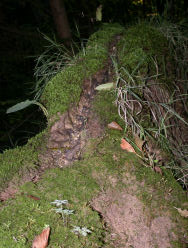

| In Deutsch |
| In Deutsch |
Steinerne Rinne bei Rohrbach
Useful Information
|  |
| Image: Nahaufnahme des Wassers das auf der Rinne fließt. |
| Location: | Rohrbach, near Weißenburg. |
| Open: |
no restrictions. [2008] |
| Fee: |
free. [2008] |
| Classification: |
 Tufa Runnel Tufa Runnel
|
| Light: | n/a |
| Dimension: | L=60m, W=0.3m, H=1m, A=510m asl. |
| Guided tours: | |
| Photography: | |
| Accessibility: | |
| Bibliography: | |
| Address: | |
| As far as we know this information was accurate when it was published (see years in brackets), but may have changed since then. Please check rates and details directly with the companies in question if you need more recent info. |
|
History
Description
 |
| Image: the wooden boardwalk. |
The Steinerne Rinne (Rock Runnel) near Rohrbach is actually an unimposing sight. If you follow the road out of the small village there is a parking lot with a hydrotherapy pool on the left hand side. The Steinerne Rinne is located uphill in the forest and is easily accessible by a wooden boardwalk. There are numerous explanatory signs. But the runnel itself is rather unspectacular, just a small brook, with a bed 10cm wide and 10cm deep.
But a closer look reveals the strangest detail: the water runs on top of a dam built of limestone or better tufa. The dam had to be repaired on several spots, vandalism is today a problem many Natural Monuments. For a detailed explanaition have a look at the page
Tufa RunnelThe spring which feeds the runnel springs from the border between two layers of the Dogger locally called Opalinuston and Eisensandstein.
 |
| Steinerne Rinne bei Rohrbach Gallery |
 Search Google for "Steinerne Rinne bei Rohrbach"
Search Google for "Steinerne Rinne bei Rohrbach" Google Earth Placemark
Google Earth Placemark